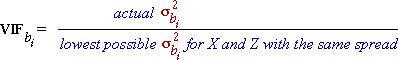
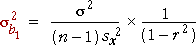
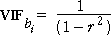

Variance inflation factors
The loss of accuracy of b1 and b2 due to the correlation between X and Z is quantified by their variance inflation factors (VIF), defined by:

For example, if the VIF for the slope parameter associated with X is 4.0, its variance is 4 times what it would have been if X and Z were uncorrelated — i.e. its standard deviation is twice the minimum possible.
Since the formula for the actual variance of b1 is

and its minimum value arises when r is zero (uncorrelated explanatory variables), and a similar formula holds for the other slope parameter, the variance inflation factors can both be written as

(Although both VIFs are the same in models with only two explanatory variables, all VIFs are usually different in models with three or more explanatory variables.)
Illustration
The diagram below shows a normal linear model, represented by two planes ± 2σ above and below the regression plane. (95% of response values from the model would be expected to be between these planes.)
y = 2.0 + 0.4 x
The x- and z-values are represented by crosses on the x-z plane and red vertical lines above each cross between the ± 2σ planes. (Rotate with the mouse or buttons to understand this diagram better.)
At the bottom of the diagram, the distributions of the least squares slopes are shown — they are normal distributions. (We will not simulate data from the model in this diagram to check that they are correct.)
Drag the slider to adjust the correlation between X and Z. Observe that the spread of the two distributions is lowest when X and Z are uncorrelated (and hence the VIF is 1.0). When the correlation is increased, the VIF also becomes higher.
Multicollinearity and orthogonal variables
When the two explanatory variables X and Z are highly correlated, they are called multicollinear. (There is no precise definition for the term.)
Uncorrelated explanatory variables are called orthogonal. When the explanatory variables are orthogonal,
Orthogonal explanatory variables are clearly desirable, but in practice they usually only arise from designed experiments — in experiments, the values of X and Z can be chosen to be uncorrelated.